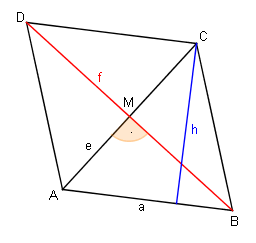
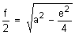
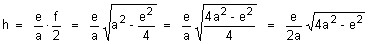

Lösung Nr 16, p. 65

Gegeben: Rhombus mit Seitenlänge a und Diagonale e
Gesucht: Drücke seine Höhe h mit Hilfe von a und e aus
Lösung:
Idee: Man berechnet den Flächeninhalt A des Rhombus auf zwei Arten:
A = a · h = 0.5 · e · f , also ist h = 0.5 · f · e/a . Aber wie gross ist f?
Im rechtwinkligen Dreieck ABM gilt: (e/2)2 + (f/2)2 = a2, daher


©1997 - 2026 www.mathematik.ch |🔍